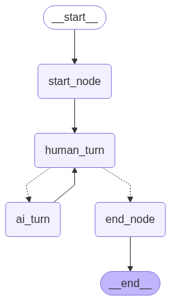

Designing a simple Conversational Agent
Ready for agents ? Well tbh i don't really like buzzwords that much. Today though we are going to talk about one. Actually let's implement one. Luckily [LangGraph] offers an extended API so we can create our own conversational agents.
[Designing the Logic]
For our simple conversational agent let's create one user node and one a.i. node denoting the possible nodes that take actions. The logic is as follows :
- A start node feeds a system prompt to the model to give the appropriate context
- The human starts the conversation
- A conditional node sends the flow to the end_node or to the LLM model to continue the conversation.
- If a specific
[end]|[stop]phrase is received from the human user then the conversation ends.

[Selecting LLM and preprocessing steps]
Since we are not rich we are going to use open source models for the chat_model
construct that Langgraph offers. These chat_models play the role of the LLM models
we can invoke with certain messages and then model inference begins and we get the results back from the model.
Langgraph offers many methods, like for example batching or streaming.
In our case we are going to use TinyLlama/TinyLlama-1.1B-Chat-v1.0
which is an extremely lightweight model with 1.1 billion parameters so it can be experimented with easily.
We need to first use the huggingface api to load the model and Tokenizer.
We are going to use the HuggingFacePipelinefuction to generate text with TinyLlama.
Those steps steps are simple , we just select low temperature and "text-generation"
from langchain.llms import HuggingFacePipeline
from transformers import pipeline, AutoTokenizer, AutoModelForCausalLM
from typing import Annotated
from pydantic import BaseModel
from langgraph.graph import StateGraph, START, END
from langchain_core.messages import AnyMessage, AIMessage, HumanMessage
from langgraph.graph.message import add_messages
from typing import Literal
import os
from dotenv import load_dotenv
from langchain_core.messages import SystemMessage
from IPython.display import Image, display
# load the environment variables
load_dotenv()
# download model from hugging face
model_id = "TinyLlama/TinyLlama-1.1B-Chat-v1.0"
# Load locally
tokenizer = AutoTokenizer.from_pretrained(
model_id, token=os.environ["HUGGINGFACEHUB_API_TOKEN"], device_map="cpu"
)
model = AutoModelForCausalLM.from_pretrained(
model_id, token=os.environ["HUGGINGFACEHUB_API_TOKEN"], device_map="cpu"
)
pipe = pipeline(
"text-generation",
model=model,
tokenizer=tokenizer,
max_new_tokens=256,
temperature=0.2,
do_sample=True,
top_p=0.98,
return_full_text=False, # disable to only return the latest response not the full conversation
)
[Defining the STATE model]
Langgraph works by defing a graph like the own you saw above which expects a State
object where the actual "message flow" is stored while the conversation happens. Of course
what this object will hold can be customized but in essense we will pass a list of Messages that
convey the conversational history.
Since I don't really like TypedDict to define the State we are going to use pydantic
to define the model of the state that each node of the graph will receive as input and produce as output.
This State input and output define the schema of the graph and of course can be
customized.
class MessagesState(BaseModel):
messages: Annotated[list[AnyMessage], add_messages]
The add_messages we use to annotate the messages atribute is used in langgraph as a combiner
and it can be used to update our messages list with new as you will see later.
[Defining the nodes and conditional nodes]
Each node will play the role of human or a.i. action turn and the continue_conversation function is used
to decide if the user wants to continue talking with the model or end the conversation.
Writing [end] or [stop] stops the conversation.
# starting node
def start_node(state: MessagesState) -> MessagesState:
sys_prompt = "You are a knowledgeable and helpful AI assistant specialized in SQL"
print(sys_prompt)
return MessagesState(
messages=add_messages(state.messages, SystemMessage(content=sys_prompt))
)
def end_node(state: MessagesState) -> MessagesState:
mes = "[AI] :Ok great talk! See ya!\n"
print(mes)
return MessagesState(messages=add_messages(state.messages, AIMessage(content=mes)))
def continue_conversation(state: MessagesState) -> Literal["ai_turn", "end_node"]:
user_input = state.messages[-1].content
end_messages = [
"[end]",
"[stop]",
]
if any(x == user_input for x in end_messages):
return "end_node"
else:
return "ai_turn"
def human_turn(state: MessagesState) -> MessagesState:
user_input = state.messages[-1].content
human_input = input("[St] : ")
return MessagesState(
messages=add_messages(state.messages, HumanMessage(content=human_input))
)
# Define the function that calls the model
def ai_turn(state: MessagesState) -> MessagesState:
response = llama_chat_model.invoke(state.messages)
print(f"[AI]: {response}")
return MessagesState(
messages=add_messages(state.messages, AIMessage(content=response))
)
The ai_turn is interesting since it is the one node that actually calls the llm model
taking into account the conversational history up to this point to generate a continuation of the conversation.
The HumanMessage, AIMessage, SystemMessage are classes predefined in langgraph
that denote the different roles that each message derives from.
[Constructing the Graph]
What is left is to construct the graph and it is simple since we use functions defined in langgraph API to add nodes, condition nodes and edges between nodes. The logic is actually strictly following the logic described above in the image of the graph . The human is the only one that can end the conversation. Finally we need to compile the graph so it is built and we can invoke it.
# Define a new graph
workflow = StateGraph(state_schema=MessagesState)
# Define the (single) node in the graph
workflow.add_node("start_node", start_node)
workflow.add_node("human_turn", human_turn)
workflow.add_node("ai_turn", ai_turn)
workflow.add_node("end_node", end_node)
# add the edges
workflow.add_edge(START, "start_node")
workflow.add_edge("start_node", "human_turn")
workflow.add_conditional_edges("human_turn", continue_conversation)
workflow.add_edge("ai_turn", "human_turn")
workflow.add_edge("end_node", END)
g = workflow.compile()
[Starting the conversation]
To actually test our conversational chatbot we can
just invoke it with an initial message like the one below
since this graph expects as input as you remember a model of our Class
MessagesState since we created it this way.
This will trigger the start node and the conversational flow begins.
messages = g.invoke(
MessagesState(messages=[HumanMessage(content="What is SELECT Statement in SQL ?")])
)